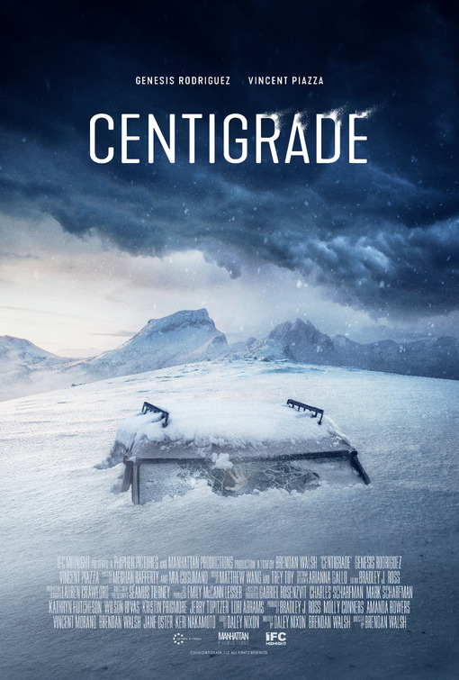
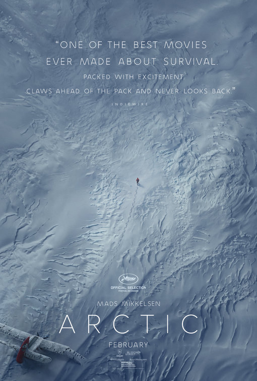
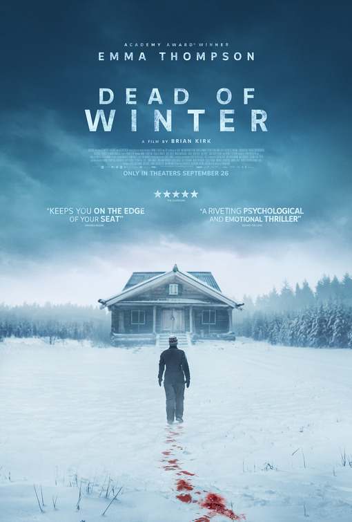

✧ AI VISUAL SEARCH
Have the image in your head.
Find a place to start.
Describe a scene, colour or composition to explore poster references. Or switch to text search when you know the title.
Try “snow-covered mountains” ↗


✧ snow-covered mountains
ILLUSTRATIVE REFERENCES · EXPLORE YOUR OWN QUERY IN THE APP